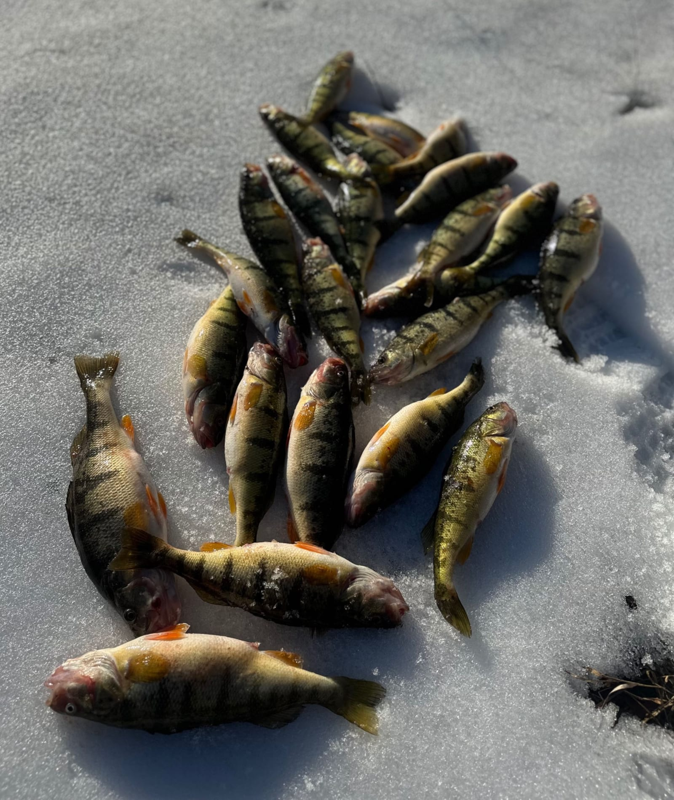
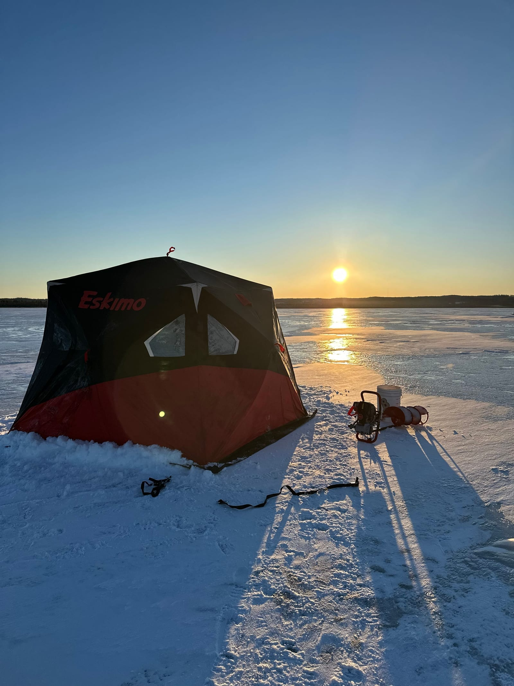
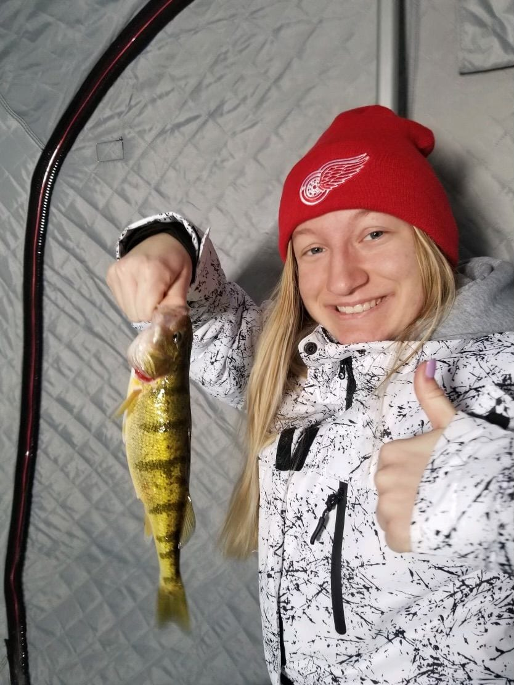
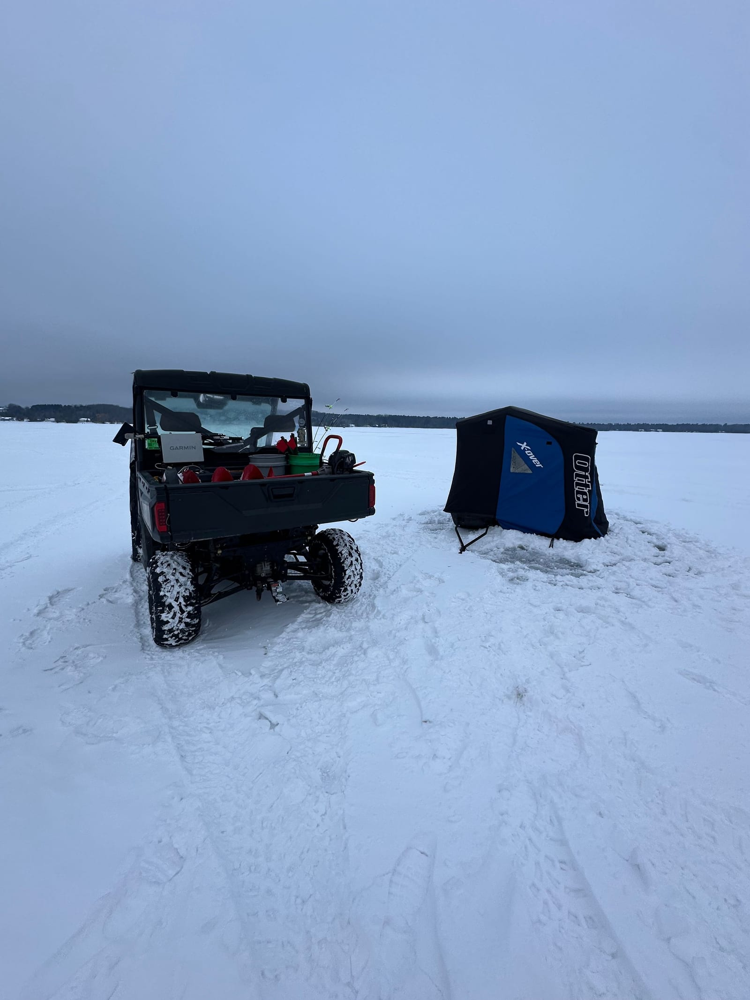

Fall Perch & Hard Water · Traverse City
Jumbo perch, from the boat and through the ice.
Torch Lake is twenty minutes outside Traverse City and it is a different lake in October than it is in July. Fall perch from the boat through December, then the shanty goes out and we keep going all winter.
Fall perch from $375 / 2 anglers · ice fishing from $179 per angler
September – December
Fall perch on Torch Lake.
I run perch trips on Torch Lake, just twenty minutes outside Traverse City, and on a few other lakes through the fall and early winter, weather permitting. This is a great time of year to get out and enjoy the lakes without all the traffic.
Fish are located on Livescope and fished directly under the boat, which makes it fun for all ages and skill levels — there is no long casting to learn and you can watch the fish come to your jig on the screen.
Fish cleaning available: $20 per limit. It is not included in the trip rate, but say the word and you go home with fillets, not with a cooler and a problem.
Season runs September through December, and possibly longer if the weather cooperates.
Fall perch — per boat
Fish cleaning available: $20 per limit — not included in the trip rate. Gratuity not included. Weather permitting. Cancellations require 48 hours notice.
Prefer to book by phone? Call or text (517) 388-6514.


Winter · Perch, Panfish & Pike
Ice fishing.
I offer guided and walk-out ice fishing on several different lakes in Northern Michigan and around Traverse City. Trips include all bait, tackle and rods, plus top-of-the-line electronics — Livescope or Vexilar.
Ice fishing is the one trip on this site priced per angler rather than per boat, so it works well for a group.
Bring warm layers and boots and a valid Michigan fishing license; everything else, including the heated shanty, is handled.
Ice fishing — per angler
Bait, tackle, rods and electronics (Livescope or Vexilar) included. Gratuity not included. Ice conditions permitting.
Prefer to book by phone? Call or text (517) 388-6514.



Where We Fish
Torch Lake and the inland lakes.
Torch Lake is the headline, twenty minutes from Traverse City. Several other inland lakes come into the rotation depending on the season and the ice.
- Torch Lake
- Area inland lakes
- Perch
- Panfish
- Pike
Perch & Ice FAQ
Cold-weather questions.
How do I book?
Two ways, both first-class: pick a trip and an open date on the booking calendar, or call or text me at (517) 388-6514. A $150 deposit reserves the date, and cancellations require 48 hours notice.
When is perch season on Torch Lake?
September through December, and possibly longer if the weather allows. It is the quiet season on the lake — none of the summer boat traffic.
Do you clean the fish?
Yes, if you want me to. Fish cleaning is not included in the trip rate — it is available for $20 per limit, and you go home with fillets instead of a cooler full of work.
How do you find the fish?
Livescope. Fish are located on the electronics and fished directly under the boat, which makes it straightforward and genuinely fun for all ages and skill levels — you watch your jig and the fish on the same screen.
Is ice fishing priced the same way?
No. Ice fishing is priced per angler: $179 for a half day of four hours and $229 for a full day of seven hours. Fall perch trips from the boat are priced per boat, for up to two anglers.
What do I need to bring on the ice?
Warm layers, boots, and a valid Michigan fishing license. Bait, tackle, rods and electronics are provided, and trips run out of a heated shanty.
What is a walk-out trip?
Some lakes and some ice conditions are better reached on foot than by vehicle. A walk-out trip is exactly that: we walk the gear out to the fish rather than driving it.
Other trips

Night Mousing
Big rodent patterns, full dark, the largest browns in the system. 8 PM to 3 AM.

Streamer & Dry Fly
Spring and fall streamer work, and classic Northern Michigan hatch fishing all summer.

Manistee Salmon
Kings and coho on the jet boat, on cured bait, from late summer into fall.

Family Panfish Trips
Summer bluegill on quiet lakes. The best first fishing trip there is, for kids and families.

Photo Gallery
Every fish photo on the site, sorted by the water it came out of.
Book Your Trip
Book perch or a day on the ice.
Fall perch and hard water both depend on conditions. The calendar has every open date, and a call or text gets you what is fishing right now.
Prefer to book by phone? Call or text (517) 388-6514.
Or email clr517@hotmail.com, or send a message on Facebook.
Booking at a glance
- $150 deposit reserves your date
- 48-hour cancellation notice required
- All gear, flies & tackle included
- Lunch included on full-day river trips
- Fish cleaning available: $20 per limit
- Gratuity is not included in trip rates
- MI fishing license required (michigan.gov/dnr)
- Rates are per boat, up to 2 anglers, unless noted